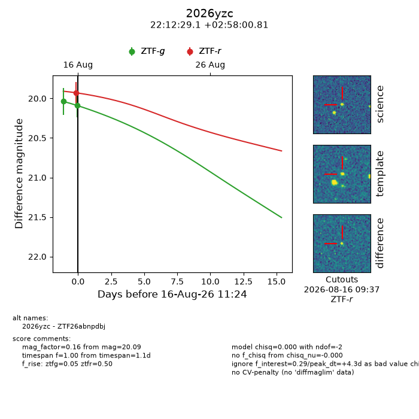
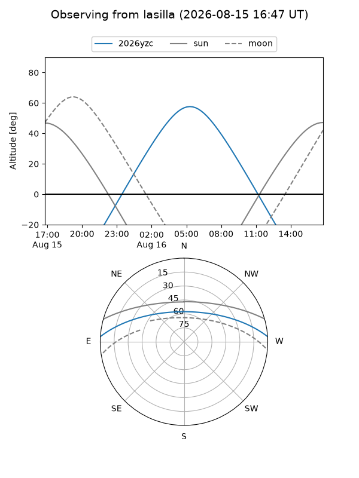
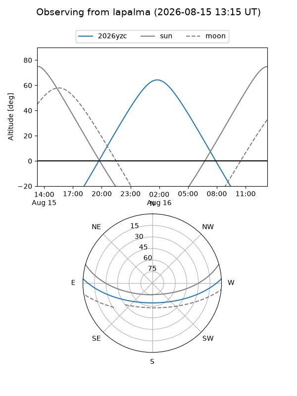
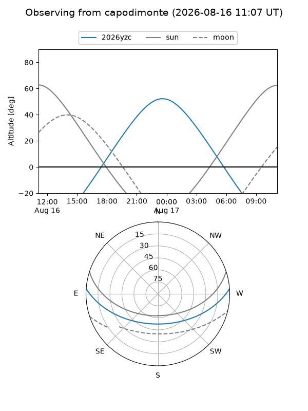
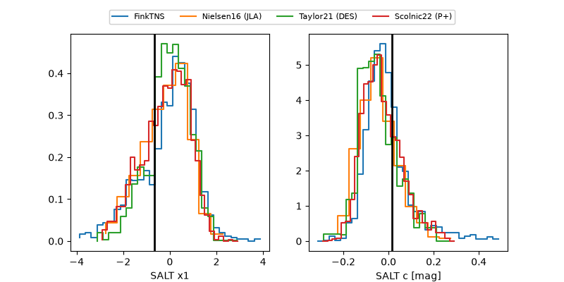

2026yzc
Target 2026yzc at 2026-08-16 11:27
Aliases and brokers:
FINK-ZTF: ztf.fink-portal.org/ZTF26abnpdbj
Lasair-ZTF: lasair-ztf.lsst.ac.uk/objects/ZTF26abnpdbj
ALeRCE-ZTF: alerce.online/object/ZTF26abnpdbj
YSE-PZ: ziggy.ucolick.org/yse/transient_detail/2026yzc
TNS name: wis-tns.org/object/2026yzc
Direct TNS query: direct search
alt names
ZTF26abnpdbj (ztf,fink_ztf)
2026yzc (tns,yse)
Coordinates:
equatorial (ra, dec) = 333.1214,+2.96689
equatorial (HMS+DMS) = 22:12:29.13,+02:58:00.81
galactic (l, b) = (64.7576,-41.28916)
Flags:
TNS type: nan
peak dt: +4.3
Photometry:
last ztfg=20.09, ztfr=19.93
2 ztfg, 1 ztfr detections
Lightcurve

Visibility



Additional plots
